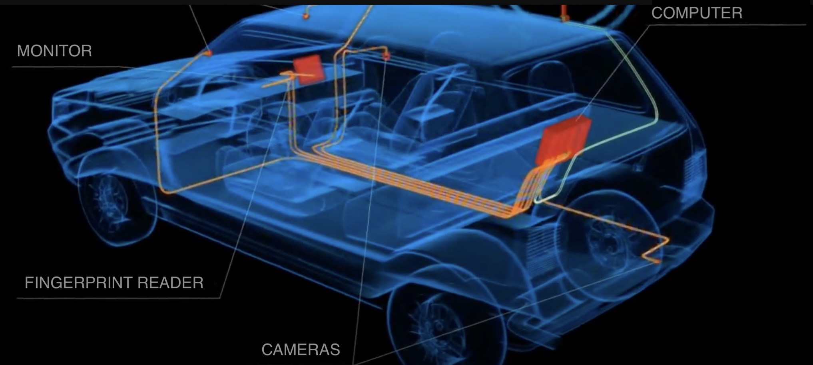
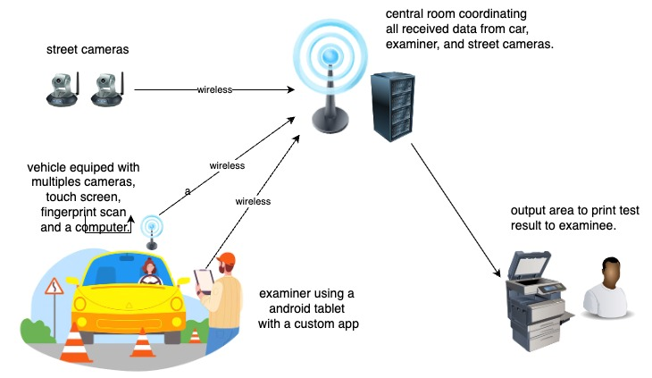

Automated Driver Test

This project involved the development of a comprehensive platform for managing the entire driver's license testing process.
- In-Car Monitoring: Four strategically placed cameras within the vehicle monitored candidate actions.
- Secure Authentication: Fingerprint authentication ensured the correct candidate took the test.
- Examiner Oversight: A dedicated examiner tablet app facilitated real-time test supervision.
- In-Vehicle Management: A computer and touchscreen near the driver's seat processed camera inputs and interacted with users.
- Centralized Control: A central "war room" provided real-time monitoring of all tests in progress.
- Unified Tech Stack: A consistent technology stack across the tablet app, server, and vehicle app client ensured seamless operation.
This innovative system streamlines the driver's license testing process, enhancing efficiency and security.
Technical Highlights
The platform prioritized a consistent and reliable experience for both examiners and test-takers. Here's a look at the key technologies involved:
- Consistent Tech Stack: A carefully chosen tech stack, centered around .NET (C#), ensured smooth operation across all devices involved, including the examiner tablet app, server, and in-vehicle client application.
- Secure Communication: Secure communication protocols ensured data integrity and privacy throughout the testing process.
- Real-Time Monitoring: Real-time data processing enabled central control to monitor all tests in progress effectively.

By prioritizing reliable technology and efficient design, this automated driver test platform simplifies and streamlines the licensing process.
Let’s talk about how we can bring your project to life! Whether you have a question or are ready to get started, I’m here to help.
Get in touch: email